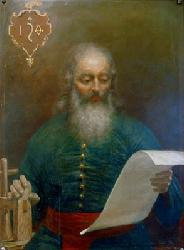
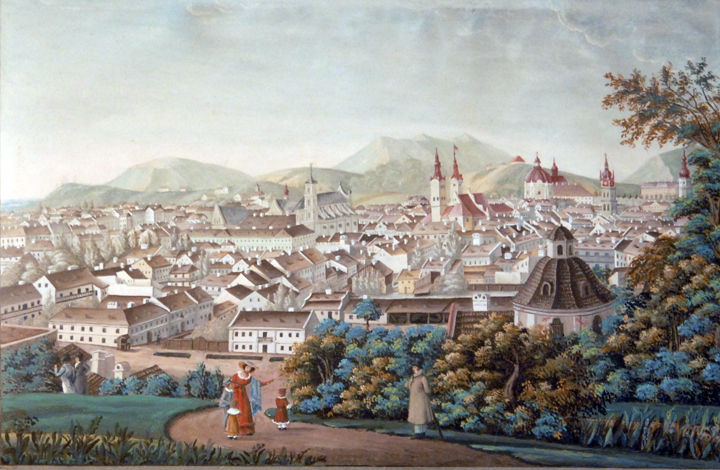
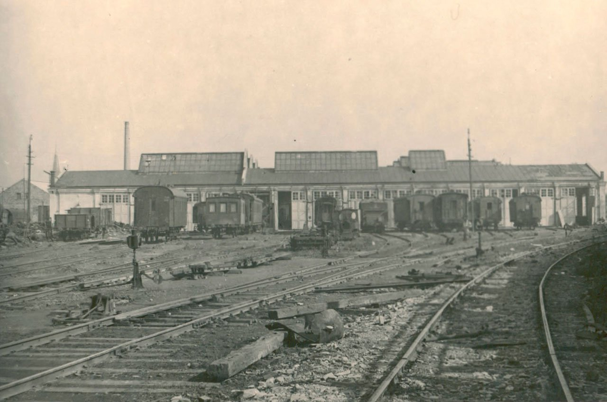
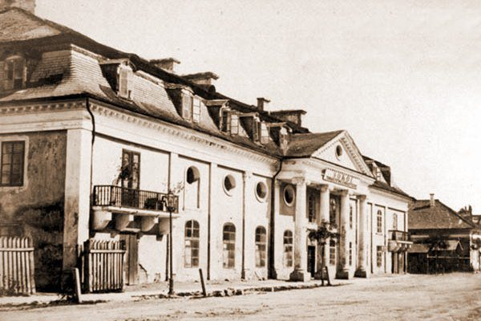
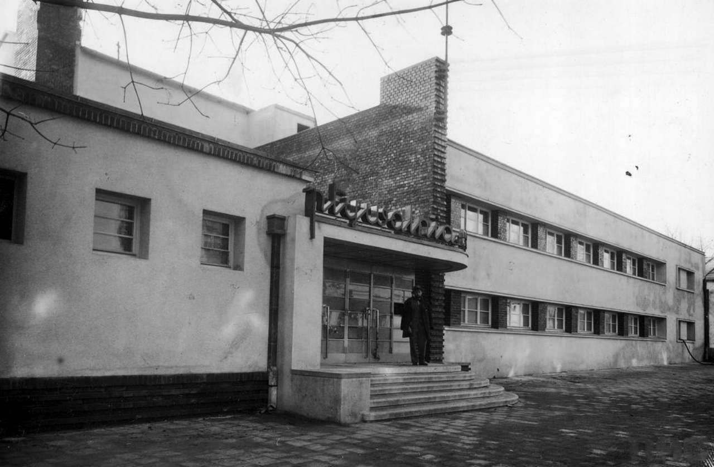
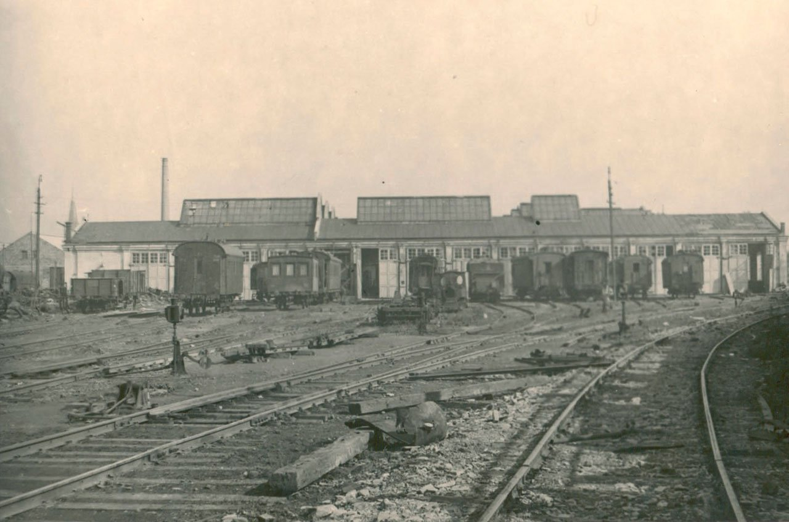
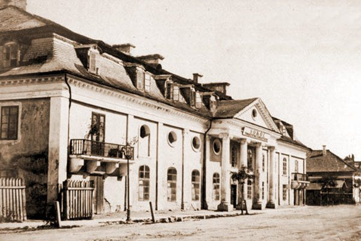
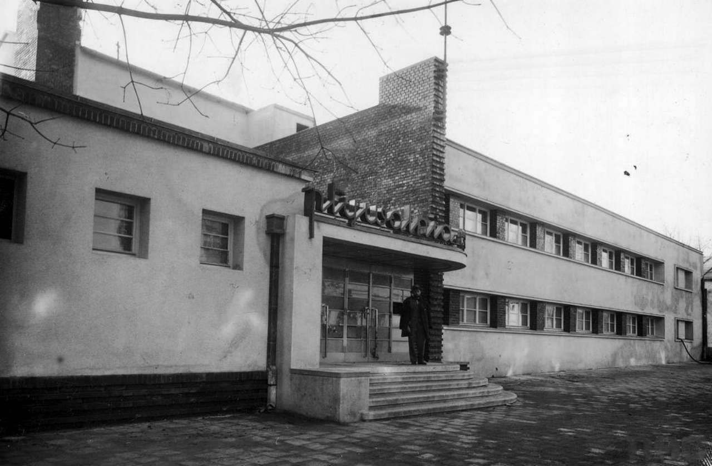

Історія нашого міста
 Історія Львова настільки ж яскрава та дивовижна, як і саме місто, насичена цікавими подіями та знаменитими постатями. Сьогодні Львову вже понад 750 років і йому є Вам про що розповісти. Місто, яке було засноване на перетині вигідних торгівельних шляхів скоро розцвітало та розвивалося, ставши одним із головних торгових центрів середньовічної Європи.
Згодом, переходячи під влади багатьох європейських країн, зокрема Польщі, Австрії, Німеччини та Росії, Львів перебирав від кожного зі своїх загарбників якусь частину культури та знань, з часом перетворившись не лише на перлину архітектури, але й столицю сучасного наукового, духовного та мистецького життя.
Історія Львова настільки ж яскрава та дивовижна, як і саме місто, насичена цікавими подіями та знаменитими постатями. Сьогодні Львову вже понад 750 років і йому є Вам про що розповісти. Місто, яке було засноване на перетині вигідних торгівельних шляхів скоро розцвітало та розвивалося, ставши одним із головних торгових центрів середньовічної Європи.
Згодом, переходячи під влади багатьох європейських країн, зокрема Польщі, Австрії, Німеччини та Росії, Львів перебирав від кожного зі своїх загарбників якусь частину культури та знань, з часом перетворившись не лише на перлину архітектури, але й столицю сучасного наукового, духовного та мистецького життя.
Зміст:
- Влади Львова
- Давній Львів
- Захоплення міста Польщею, Львів німецький
- Торгівельна місія Львова
- Примхлива фортуна
- Першодрукар Федоров
- Найбільший розквіт Львова
- Облоги Львова
- Козаки Хмельницького під мурами міста
- Турки, татари та шведи під містом
- Перехід під владу Австрії
- Повернення до Польщі
- Під владою радянського тоталітаризму
- Часи української незалежності
Влади Львова
- 1256-1340 – Львів у складі Галицько-Волинського князівства.
- 1340-1349 – Львів під владою боярської олігархії Дмитра Детька з Перемишля і Данила з Острова.
- 1353 – Львів під владою литовського князя Любарта Гедемвіновича.
- 1372-1378 – Львів під владою намісника Володислава Опольського, фактично під протекторатом Угорщини.
- 1378-1387 – Львів під владою Угорщини.
- 1387-1772 – Львів під владою Речі Посполитої.
- 1772-1918 – Львів під владою Австрійської імперії.
- 1914-1915 – Львів під владою царської Росії.
- 1918 – Львів під владою Західноукраїнської Народної Республіки.
- 1918-1939 – Львів під владою Польщі.
- 1939-1941 – Львів під владою СРСР.
- 1941-1944 – Львів під владою нацистської Німеччини.
- 1944-1991 – Львів під владою СРСР.
- Від 1991 – Львів у незалежній українській державі.
Давній Львів
Розташований, як і Рим, на семи горбах, серед лісів у долині ріки Полтви, Львів завжди відрізнявся вигідним стратегічним розташуванням і надзвичайно гарними краєвидами. Одного разу, проїжджаючи цими місцями, могутній князь Галицько-Волинського князівства Данило Галицький зупинився на мить і зрозумів, що залишиться тут назавжди. Найдавніший хроніст Львова бургомістр Бартоломей Зиморович так пише про це: «Побачивши на самому кордоні своїх володінь вигідну у військовому відношенні гору, захищену внизу немовби кільцем вкритих лісом долин і самою крутістю, яка може стримати ворога, він негайно наказав збудувати тут фортецю і вирішив перенести сюди власну княжу резиденцію». Високий замок було доручено охороняти чисельному загону, щоб зберігати заховані там скарби. Зміцнюючи міждержавні династичні зв’язки 1248 року Данило Галицький одружує свого сина Лева з принцесою Констанцією, донькою угорського короля Бели IV і дарує молодятам це місто, яке на честь сина назвав Львовом. Констанція була католичкою й часто сумувала за своєю батьківщиною і релігією. Лев вирішив подарувати коханій дружині католицький храм Івана Хрестителя, збудований у романському стилі. Під Замковою горою стояв княжий палац і придворна православна княжа церква Святого Миколая. 750 років тому на площі Старий Ринок вирувало бурхливе життя, сюди на торг з’їжджалися купці з Європи й Азії: європейці звозили на продаж сукно, шкіру, срібло та зброю, а греки і вірмени – шовк, східне коріння й вино. У 70-х роках XIII століття український князь Лев Данилович переніс з Галича до Львова столицю своєї могутньої держави, кордони якої сягали від Вісли до Чорного моря. Та історична доля поставилися неприхильно до Галицько-Волинського князівства: ослаблене постійними нападами монголо-татар і міжусобними чварами, воно стало легкою здобиччю польського королівства.
Захоплення міста Польщею, Львів німецький
Слабкістю держави скористався польський король Казимир III, якому двічі – 1340 і 1349 року вдалося захопити Львів. Наше місто декілька десятиліть по тому на довгі століття потрапляє під владу західних сусідів. Після переходу Львова під панування Польщі, Казимир не залишився байдужим до Високого Замку – цієї, як пише хроніст, «гори рідкісної форми у Сарматській землі, і збудував на цій, сягаючій до хмар горі, довгий замок з каменю, схожий до лютні». Зараз важко сказати, що спонукало Казимира перенести центр міста з площі Старий Ринок на болотисту рівнину ріки Полтви. Одна з версій – топографічна: старе місто не мало перспектив для зростання, воно було оточене горами й лісами. Але ймовірніше всього досвідчений політик Казимир III хотів на новому місці створити цілком нове місто, яке беззастережно підкорялося би польській державі, а у такому місті не залишалося місця для підкорених українців. Польський король вирішив будувати Львів за найдосконалішими тогочасними будівельними технологіями. Не довіряючи українцям та навіть і своїм, полякам, він запросив для реалізації цієї мети ремісників і будівельників з Німеччини. Таким чином Львів у XIV і XV століттях став фактично німецьким, навіть акти тогочасного львівського магістрату велися на саксонському діалекті німецької мови. Книги міських видатків і збору податків XV століття свідчать, що німці у Львові складали більшість населення. У місті того часу панувала класична готична архітектура. Та ось 1527 року сталася найстрашніша пожежа за всю історію міста: німецький готичний Львів, який був схожий до сучасного Таллінна чи Гданська, дощенту згорів. Мешканці у розпачі хотіли залишити місто, але потім передумали і вирішили наново його відбудувати. Новий Львів другої половини XVI століття вже був зовсім іншим Львовом, ренесансним, а будували його італійці. На запрошення магістрату до Львова прибули архітектори з північної Італії. Їм вдалося створити чудові зразки ренесансної архітектури, які поєднували риси італійські з рисами місцевого будівництва.
Торгівельна місія Львова
Львів протягом усієї своєї історії був великим торгівельним центром і певний час найвідомішим у Європі східноєвропейським містом. На французькій географічній карті 1492 року з усієї Східної Європи позначено лише одне місто – Leopolis. Своїй виключній торгівельній місії Львів завдячує географічному розташуванню найоптимальнішого пункту перетину шляхів зі Сходу на Захід і навпаки. З найдавніших часів серед львів’ян плекалися неабиякі купецькі таланти. Майже кожен міщанин Львова був уродженим геніальним купцем. Львів’яни відзначалися досвідом, розумом, відвагою, енергією і невпинним прагненням до збагачення. У XIV-XV століттях купцями були міщани здебільшого німецького і вірменського походження. Зі Сходу до Європи через Львів традиційно везли коштовні тканини, килими, дороге коріння, прянощі, фрукти, з Заходу на Схід одяг, зброю, срібні і золоті ювелірні вироби, шкіру. З 1379 року Львів одержав так зване право складу. Це означало, що усі не львівські купці, везучи через Львів будь-які товари зі Сходу, або Заходу, зобов’язувалися протягом двох тижнів виставляти їх у місті на продаж, а що не допродали, мали право везти далі. Звичайно ж спритні львівські купці скуповували ці товари за демпінговими цінами і таким чином збагачувалися самі, а разом з ними збагачувалось й місто. Львівський магістрат намагався якомога більше сприяти власним громадянам. Лише член міської громади мав право вільно купувати товари у заїжджих купців, а також продавати ці товари у крамницях. Іноземним купцям було заборонено проводити між собою торговельні операції під загрозою конфіскації усього товару.
Примхлива фортуна
Торгівельна могутність Львова підносила його значення як найважливішого міста Східної Європи. Однак наприкінці XV століття фортуна відвернулася від львівських купців – Турецька імперія посилила свою експансію на Захід, підкоривши Крим і Балкани. Торговельні шляхи перервалися. Цілі покоління купців Львова зазнали катастрофи. Львівський архієпископ у листі до короля фактично оплакував тогочасне становище міста: «Міщани з багатіїв зробилися жебраками. Люди, ще вчора заможні, навіть патриції сьогодні простягають долоню за хлібом, або чекають на смерть у шпиталях». Довершила удар долі найстрашніша пожежа Львова 1527 року, яка знищила практично усе місто. Але львів’яни не з тих, хто занепадає духом. Поступово Львів у нових умовах знову повертає собі купецьку славу. До турецької експансії наші купці через генуезькі та венеційські колонії над Чорним і Азовським морем забезпечували всю Європу червоною, чорною ікрою та рідкісною лососевою рибою. Втративши ці джерела прибутку львів’яни самотужки почали у власних річках і ставках вирощувати рибу, яка стає одним з основних предметів львівського експорту до Європи. Риба – свіжа, солена, сушена стала маркою Львова. Іноземні купці відзначали: «Львівських щупаків їдять і у Відні, хоч там протікає під сімома мостами багатий на рибу Дунай… Львівські щупаки варті великої похвали, їх можна порівняти з тими, які колись ловили між двома мостами у Тибрі і дуже цінили їх римляни». Другим важливим предметом львівського експорту був віск. Міська влада бере під пильний контроль якість цього продукту і присвоює йому торгівельну марку з гербом міста – левиком. Наскільки якість воску була важливою для Львова свідчить те, що за його фальшування засуджували до смерті. Львівський віск знали в усій Європі, він доходив навіть до Англії та Іспанії. Ліси навколо Львова були надзвичайно багаті на пушину. Дуже цінувалися в Європі і особливо на Сході цінні хутра вовка, рисі, шкіри лосів і особливим попитом користувалися соболі. Львівський купець Ярош Ведельський лише за один 1588 рік вивіз на експорт 30 тисяч (!) львівських соболиних шкірок, а майстер Дмитро – три тисячі шапок власного виробництва.
Першодрукар Федоров
 Надзвичайну роль у розвитку української культури і боротьбі українців за свої права відіграло книгодрукування. У Львові була надрукована перша українська книжка, і зробив це першодрукар Іван Федоров, або як його ще називали у Львові – Федорович. Він, найімовірніше, походив з українсько-білоруського пограниччя, а освіту і фах набув у європейських університетах. Опинившись у Москві, Федоров надрукував тут 1564 року першу в Росії книгу «Апостол», але змушений був утікати від московських переслідувань. І вибір його зупинився на Львові «…все лихе і найгірше з гіршого супроводжувало мене. Але з ласки Божої я до богоспасенного міста, що називається Львів, прийшов. І, помолившись, почав присвячене Богові діло, щоб боговдохновенні догмати поширювати». 1574 року перша українська книжка побачила світ. Це були Дії і Послання Святих Апостолів. Друкар писав: «Видрукував я цю корисну для душі книгу «Апостол» у славнозвісному місті Львові на славу всемогутньої і живоначальної Трійці, Отця і Сина, і Святого Духа, амінь…» Федоров вважався друкарем «книг перед тим небачених», але теж наголошував, що він «занедбане друкування у Львові відновив». Таким чином можна вважати, що ще до нього тут друкувалися книги. Перша книга «Апостол» вийшла накладом 1200 примірників, досить великим як на теперішні часи, а згодом його «Острозька Біблія» мала наклад півтори тисячі примірників.
Найбільший розквіт Львова
 Вже на початку XVII століття Львів стає найбільшим за кількістю населення містом України, вдвічі більшим від Києва. Відновлюється його торговельна могутність. Ґданський купець Мартин Грюневег 1606 року таким чином описав Львів: «Вся худоба, що її женуть з Поділля і Молдавії до Італії, проходить через це місто. Я об’їздив пів-Європи, побував у найславетніших містах світу, але в жодному не бачив стільки хліба. Тут величезна кількість пива і меду, не тільки місцевого, а й привезеного. Вино привозять з Молдавії, Угорщини, Греції. Інколи на Ринку можна побачити в стосах більше тисячі бочок вина. У цьому місті, як і у Венеції, на Ринку зустрінеш людей з усіх країн світу в своєму вбранні: козаків у великих кучмах, росіян у білих шапках, турків у білих чалмах, німців, італійців, іспанців – у короткому одязі. Кожен, якою б мовою він не розмовляв, знайде тут і свою мову. Місто віддалене на багато миль від моря, але коли побачиш, як на Ринку при бочках малмазії вирує натовп критян, турків, греків, італійців, зодягнених ще по корабельному, видається, неначе тут порт відразу за брамами міста». Львівський радник Йоган Альнпек писав про тогочасний Львів: «Це місто в достатній кількості постачає цілому польському королівству різні шовкові тканини, килими і пахуче коріння. Тут є все, що тільки потрібно для людського ужитку, до того ж тут незрівнянно низькі ціни на продукти, що притягає до міста велику кількість людей різних національностей…» Львів вважався найбільшим складом вина у Європі. Вина грецькі, кіпрські, сицилійські, іспанські, які тоді мали збірну назву малмазії, тисячами бочок складувалися на Ринку і в інших місцях. Потім вино розходилося країнами Європи та Сходу. Тогочасний хроніст відзначає, що будь-який львів’янин: купець, лікар, аптекар чи ремісник або гендлює малмазією, або шинкує малмазією. Але за часами добрими ідуть часи не дуже вдалі. Наприкінці XVII століття, особливо на початку XVIII, Львів знову занепадає. Облоги, війни, розвал польської держави і вимоги нової історичної епохи знову на певний час ставлять Львів у розряд міст незначних і маловпливових.
Облоги Львова
Серед своїх багатьох історичних досягнень Львів може похвалитися ще й тим, що протягом трьох з половиною століть жоден неприятель не зміг узяти міста. За цей час Львів пережив близько сотні облог. Львів пережив облоги від турків, татар, молдаван, козаків і російських військ, коли сили ворогів у десятки, а то й у сотні разів, переважали сили захисників, але все ж нападники не змогли здобути твердині королівського міста. Одна з перших відомих львівських облог сталася 1286 року. Татарський хан Телебуга оточив місто і вислав до Львова на переговори про капітуляцію своїх послів. Як розповідає стара львівська легенда, перед тим, як показати місто татарським послам, жінки повикочували на вулиці безліч пустих діжок і поперевертали їх догори дном. Потім повимітали з комірок усі залишки зерна, муки і крупи, які там ще були, і засипали цими рештками вершечки пустих діжок, аби склалося враження, що вони повні. До того ж повипускали з хлівів усю пташину і худобу, яка ще залишилася, котра з криком і вереском бігала вулицями. Коли це все побачили татарські посли, вони з сумом розповіли Телебузі, що місто має стільки живності, що легко зможе витримати навіть дуже довготривалу облогу. Розлючений цим повідомленням хан, як пише літописець, ще «два тижні стояв під стінами не воюючи, і людей, які наважились виходити з обложеного міста, роздягав на голо і так відпускав. І багато людей позамерзало, бо люта тоді зима була».
Козаки Хмельницького під мурами міста
Однією з найжорстокіших і найконтроверсійніших облог Львова була перша облога Богдана Хмельницького 1648 року. До цього часу в інтелектуальних середовищах точиться суперечка, ким же насправді був для Львова Хмельницький: визволителем від польського панування, чи диким загарбником зі Сходу, який хотів сплюндрувати європейське місто і знищити його мешканців. Ішов 1648 рік. Визвольна війна українського народу проти польського панування набирала обертів. Польська шляхта щойно зазнала нищівної поразки під Пилявцями. Сила силенна козацького і татарського війська, а також озброєних селян, котрі з’явилися під мурами міста, були рішуче налаштовані сплюндрувати Львів. Деякі татари і козаки навіть привели зі собою по десятку коней, аби навантажити на них омріяну здобич. Передміщани тікали за мури міста, жінки з дітьми ховалися у храмах і монастирях, а решта львів’ян, які залишилися у місті, вирішили боронити його до останнього. Козаки і татари палили і грабували околиці Львова. Козаки, використовуючи передміські будівлі, влучно обстрілювали місто, тож аби позбавити неприятеля такої можливості, оборонці вирішили піти на відчайдушний крок – спалити передмістя. Коли вночі запалали сотні будинків під мурами, здавалося, що люди потрапили до пекла. На ранок на всі чотири боки від міських стін було суцільне згарище. Хмельницький починав розуміти, що легко він узяти Львів не зможе. Не допомогло навіть те, що хтось із передміщан показав козакам водогін, який ішов від Полтви до міста. Його було перекрито, і як згадує хроніст, люди, заховані за міськими мурами, «були вимушені пити воду з нечистотами». Хмельницький від облоги перейшов до розсудливої тактики переговорів. Декілька днів Львів гостив послів українського полковника Головацького і татарського обозного Піріс-Агу. Львів’яни обсипали експертів подарунками: срібними шаблями, оздобленими рубінами, золотими пасами і декількома тисячами злотих. Після такого прийому посли, звичайно, доводили Хмельницькому і Тугай-Бею, що місто дуже бідне і не може багато заплатити. Викуп обійшовся Львову у суму, яка була у декілька разів меншою від тої, яку Львів міг заплатити грішми і товарами. Ще раз козаки опинилися під мурами міста 1655 року, коли Хмельницький вже з допомогою великого російського війська вдруге так і не зміг здобути Львова.
Турки, татари та шведи під містом
1672 року турецький султан Мехмет IV, захопивши все Поділля, доручив своєму васалові Капудан-паші і його союзникові гетьманові Петру Дорошенку взяти Львів. Восени цього року найбільша кількість військ за всю його історію – 230 тисяч – оточила місто. Регулярні польські війська – драгуни, які за наказом короля прибули для оборони, швидко втекли подалі від небезпеки, не вірячи у можливість протистояти такій величезній військовій потузі. Практично усі знатні і багаті громадяни залишили місто, але бургомістр Львова – Бартоломей Зиморович привів до присяги решту міщан. Вони поклялися, що в жодному разі не залишать міста і стоятимуть до кінця. Їх було трохи більше однієї тисячі. І сталося диво – маючи перевагу у 230 разів, ворогу все ж не вдалося вдертися до Львова. Капудан-паша погодився на викуп у 80 тисяч талерів, з яких місто могло сплатити лише 5 тисяч. До моменту повної виплати турки взяли десятьох заручників, серед яких було і два українці. Все місто зі сльозами подяки проводжало їх у неволю. До заручників з власного бажання пристав міщанин Яків Нирка. Цілих сім років перебували заручники у турецькій неволі, аж поки місто не виплатило всі гроші, але повернулися додому живими не всі. 1675 року, через три роки після невдалої облоги міста військами турецького султана, під Львів рушило велике татарське військо. Король Ян III Собєський також поспішив зі своїм військом до Львова, сюди ж прибула і королева Марисенька з усім двором. Вона довго навколішки молилася за порятунок міста у Катедрі та Єзуїтському костелі. І не даремно. За свідченням англійського історика Коннора і французького Сальванді, під Львовом на Лисеницьких полях відбулася така блискавична військова перемога, яка навряд чи була до цього часу відома у світовій історії. Талановитий воєначальник Ян Собєський, маючи всього сім тисяч вояків, наголову розбив майже 50 тисяч добре озброєних татар і турків. Рештки татарського війська з ганьбою втікали додому. А 1695 року гетьман Станіслав Яблоновський остаточно розбив неподалік Львова татар, котрі вже жодного разу після цього не наважувалися з’являтися під мурами міста. Та врешті-решт уперше за багато століть Львів таки був узятий неприятелем, і сталася ця подія 1704 року. Вбраний в мундир рядового вояка 23-річний король Швеції Карл XII на чолі декількох сот своїх вояків досяг того, чого не вдавалося протягом століть зробити сотням тисяч татар, турків, молдаван і козаків. Шостого вересня 1704 року серед темної ночі шведи здобули монастир кармелітів босих. Комендант міста Францішек Галецький у цей час солодко спав за декілька десятків метрів від подій у Пороховій вежі. Зачувши галас і постріли, він дав наказ оборонятися, а сам утік на другий кінець міста в Єзуїтський колеґіум. Усього декілька сот шведських драгунів під проводом генерала Стенбока, не чекаючи підходу артилерії і піхоти, вдарили на браму міських укріплень, яка опинилася незамкненою і без охорони. Легко подолавши на мурах опір угорців з найманої королівської піхоти, за декілька хвилин шведи були вже у Ратуші, годинник якої показував восьму ранку. При штурмі міста оборонець на вежі Корнякта пострілом збив капелюха з голови шведського короля. Але втіха від цього була невелика – Львів уперше за майже чотириста років був узятий ворогом, що стало передвісником початку нових, не зовсім сприятливих, для Львова часів.
Перехід під владу Австрії
 Загальна криза Польської держави у XVIII столітті не могла не відбитися на становищі Львова. Постійні облоги, часті епідемії та пожежі призвели до значного зменшення населення міста.
Остаточна втрата панівного становища великого торговельного міста, що стояло на перетині важливих стратегічних шляхів, призвела Львів до фактичної руїни. Польща як держава настільки ослабла, що три могутні європейські країни – Австрія, Прусія і Росія вирішили просто поділити її територію між собою. У вересні 1772 року війська Австрійської імперії вступили до Львова, місто на півтори століття потрапило під владу однієї з європейських потуг.
Реформи нової влади призвели до позитивних змін у державному строї, освіті та культурі. Імператор Йосиф II, дотримуючись засад освіченого абсолютизму, провів церковну реформу. Усі львівські монастирі, які не змогли реально довести, що плідно займаються освітньою, соціальною, медичною чи харитативною діяльністю, були зліквідовані. У їхніх приміщеннях розмістили казарми, шпиталі, в’язниці, заклади освіти. Під час йосифінської реформи було знищено ряд українських храмів старої частини міста Підзамча.
1777 року розпочалася ліквідація міських оборонних мурів, які вже давно відіграли свою історичну роль. Місто розширювалося, зводились нові будівлі, облаштовувалися нові вулиці і площі. У кінці XVIII – у першій половині XIX століття у житловому та цивільному будівництві запановує архітектурний стиль класицизму.
За час панування Австрійської імперії у Львові потужно вирувало культурне життя. Було збудовано два театри європейського значення: Скарбківський (ім. М. Заньковецької) і Великий міський (Опери та балету), реорганізовано університет; у місті розвивалася видавнича справа. 1870 року Львів одержав місцеве самоврядування. Місто стало цілковито європейським. Австрійський журналіст, відвідавши Львів, не знайшов тут жодної відмінності з великим містами Європи: ті ж будинки, ті ж крамниці і кав’ярні, той самий уклад життя, побуту, ті ж традиції. У австрійському Львові народжувалися технічні і наукові винаходи, впроваджувалися передові на той час технології. Тут започаткували одне з перших в імперії газове, а згодом і електричне освітлення вулиць, автомобільний транспорт, телефонний зв’язок. 1894 року у Львові вперше побіг по рейках електричний трамвай, задовго до того, як це сталося у Відні. Згодом тут збудували найкращий в імперії залізничний вокзал.
Утім, незважаючи на лібералізацію політичного і суспільного життя під скіпетром Габсбургів, українці й далі виборювали свою духовну і політичну свободу. Передові молоді вчені Маркіян Шашкевич, Іван Вагилевич і Яків Головацький 1837 року видали збірку «Русалка Дністрова», написану мовою простого народу. Це було сміливим викликом і виступом проти національного гноблення українців. Книгу заборонили цензори, майже увесь її наклад знищили, а проти авторів розпочалися переслідування. Під час Весни народів 1848 року Головна Руська рада у Львові проголосила про відродження і соборність українського народу. У цілому відносно ліберальна політика Австрійської імперії не без домішку одвічного принципу divide et impera (поділяй і володарюй) усе ж сприяла тому збереженню української ідентичності, якого не зазнав жоден з інших регіонів України під пануванням різних влад у різні часи.
Загальна криза Польської держави у XVIII столітті не могла не відбитися на становищі Львова. Постійні облоги, часті епідемії та пожежі призвели до значного зменшення населення міста.
Остаточна втрата панівного становища великого торговельного міста, що стояло на перетині важливих стратегічних шляхів, призвела Львів до фактичної руїни. Польща як держава настільки ослабла, що три могутні європейські країни – Австрія, Прусія і Росія вирішили просто поділити її територію між собою. У вересні 1772 року війська Австрійської імперії вступили до Львова, місто на півтори століття потрапило під владу однієї з європейських потуг.
Реформи нової влади призвели до позитивних змін у державному строї, освіті та культурі. Імператор Йосиф II, дотримуючись засад освіченого абсолютизму, провів церковну реформу. Усі львівські монастирі, які не змогли реально довести, що плідно займаються освітньою, соціальною, медичною чи харитативною діяльністю, були зліквідовані. У їхніх приміщеннях розмістили казарми, шпиталі, в’язниці, заклади освіти. Під час йосифінської реформи було знищено ряд українських храмів старої частини міста Підзамча.
1777 року розпочалася ліквідація міських оборонних мурів, які вже давно відіграли свою історичну роль. Місто розширювалося, зводились нові будівлі, облаштовувалися нові вулиці і площі. У кінці XVIII – у першій половині XIX століття у житловому та цивільному будівництві запановує архітектурний стиль класицизму.
За час панування Австрійської імперії у Львові потужно вирувало культурне життя. Було збудовано два театри європейського значення: Скарбківський (ім. М. Заньковецької) і Великий міський (Опери та балету), реорганізовано університет; у місті розвивалася видавнича справа. 1870 року Львів одержав місцеве самоврядування. Місто стало цілковито європейським. Австрійський журналіст, відвідавши Львів, не знайшов тут жодної відмінності з великим містами Європи: ті ж будинки, ті ж крамниці і кав’ярні, той самий уклад життя, побуту, ті ж традиції. У австрійському Львові народжувалися технічні і наукові винаходи, впроваджувалися передові на той час технології. Тут започаткували одне з перших в імперії газове, а згодом і електричне освітлення вулиць, автомобільний транспорт, телефонний зв’язок. 1894 року у Львові вперше побіг по рейках електричний трамвай, задовго до того, як це сталося у Відні. Згодом тут збудували найкращий в імперії залізничний вокзал.
Утім, незважаючи на лібералізацію політичного і суспільного життя під скіпетром Габсбургів, українці й далі виборювали свою духовну і політичну свободу. Передові молоді вчені Маркіян Шашкевич, Іван Вагилевич і Яків Головацький 1837 року видали збірку «Русалка Дністрова», написану мовою простого народу. Це було сміливим викликом і виступом проти національного гноблення українців. Книгу заборонили цензори, майже увесь її наклад знищили, а проти авторів розпочалися переслідування. Під час Весни народів 1848 року Головна Руська рада у Львові проголосила про відродження і соборність українського народу. У цілому відносно ліберальна політика Австрійської імперії не без домішку одвічного принципу divide et impera (поділяй і володарюй) усе ж сприяла тому збереженню української ідентичності, якого не зазнав жоден з інших регіонів України під пануванням різних влад у різні часи.
Повернення до Польщі
Після першої світової війни, після поразки у ній Австро-Угорської імперії Львів волею європейських держав-переможців знову потрапив під панування Польщі. Листопадовий (1918 року) виступ українців за незалежність, утворення Західноукраїнської Народної республіки, об’єднання з Великою Україною, хоча у підсумку таки закінчились поразкою, все ж заклали підвалини української незалежності й соборності. Панування польського авторитарного режиму у Львові у 1919-1939 роках посилювало спротив українців, консолідувало їх у боротьбі за свої права. На зміну «золотому вікові» австрійської сецесії початку XX століття у місцевому будівництві прийшов прагматичний і строгий конструктивізм. Територіально Львів значно розширився за рахунок ряду приміських районів. Якщо населення Львова у 1910 році складало 210 тисяч, то напередодні Другої світової війни вже понад 300 тисяч.
Під владою радянського тоталітаризму
У вересні 1939 року внаслідок змови Сталіна з гітлерівською Німеччиною Львів потрапив до складу Радянської імперії. Об’єднання українського народу у єдиній державі і часткова українізація освіти та культури зводилася нанівець масовими і небаченими в історії тоталітарними репресіями проти західних українців. Десятки тисяч галичан було знищено, сотні тисяч вивезли у концтабори та вигнання у Сибір. Опір Української повстанської армії радянському режимові тривав до другої половини 50-х років. У 60-і та 70-і роки гучними були процеси у Львові над дисидентами В’ячеславом Чорноволом, Богданом Горинем, Іваном Гелем, Іриною та Ігорем Калинцями. Всі вони спричинилися до подальшого здобуття Україною незалежності.
Часи української незалежності
 Львів, який є незаперечною столицею української культури, духовності і національної ідентичності, завжди відігравав чільну роль у розвитку процесів демократії та здобуття української незалежності. Усі державотворчі процеси становлення і утвердження української незалежності ініціювалися зі Львова. Тут відбувалися перші масові акції на підтримку незалежності, учасників, яких переслідували і били спецзагони міліції.
17 вересня 1989 року у Львові відбулася найбільша на той час стотисячна демонстрація за відродження української незалежності і Греко-Католицької Церкви. Живий ланцюг соборності між Львовом і Києвом 21 січня 1990 року, коли одночасно взялися за руки мільйони українців, став віхою на шляху відновлення української держави. 3 квітня 1990 року над львівською Ратушею замайорів синьо-жовтий державний стяг. На святкування ухвалення Акта про державну незалежність України 24 серпня 1991 року наступного дня на вулиці міста вийшли сотні тисяч львів’ян.
У 1999 році Львів виступив своєрідною столицею Центрально-Східної Європи. Він став єдиним містом в історії України, яке приймало одночасно дев’ятьох керівників держав під час саміту глав держав Східної та Центральної Європи.
Львів завжди був і є детонатором націотворчих і демократичних процесів в українській державі. Наше місто стало головним оплотом Помаранчевої революції листопада-грудня 2004 року, коли про Україну заговорив увесь світ. 70% усіх львів’ян брали участь у акціях відстоювання демократії у Львові і щотретій львів’янин побував на Майдані Незалежності у Києві. Восени 2006 року Львів урочисто святкував своє 750-річчя.
Львів, який є незаперечною столицею української культури, духовності і національної ідентичності, завжди відігравав чільну роль у розвитку процесів демократії та здобуття української незалежності. Усі державотворчі процеси становлення і утвердження української незалежності ініціювалися зі Львова. Тут відбувалися перші масові акції на підтримку незалежності, учасників, яких переслідували і били спецзагони міліції.
17 вересня 1989 року у Львові відбулася найбільша на той час стотисячна демонстрація за відродження української незалежності і Греко-Католицької Церкви. Живий ланцюг соборності між Львовом і Києвом 21 січня 1990 року, коли одночасно взялися за руки мільйони українців, став віхою на шляху відновлення української держави. 3 квітня 1990 року над львівською Ратушею замайорів синьо-жовтий державний стяг. На святкування ухвалення Акта про державну незалежність України 24 серпня 1991 року наступного дня на вулиці міста вийшли сотні тисяч львів’ян.
У 1999 році Львів виступив своєрідною столицею Центрально-Східної Європи. Він став єдиним містом в історії України, яке приймало одночасно дев’ятьох керівників держав під час саміту глав держав Східної та Центральної Європи.
Львів завжди був і є детонатором націотворчих і демократичних процесів в українській державі. Наше місто стало головним оплотом Помаранчевої революції листопада-грудня 2004 року, коли про Україну заговорив увесь світ. 70% усіх львів’ян брали участь у акціях відстоювання демократії у Львові і щотретій львів’янин побував на Майдані Незалежності у Києві. Восени 2006 року Львів урочисто святкував своє 750-річчя.


 




